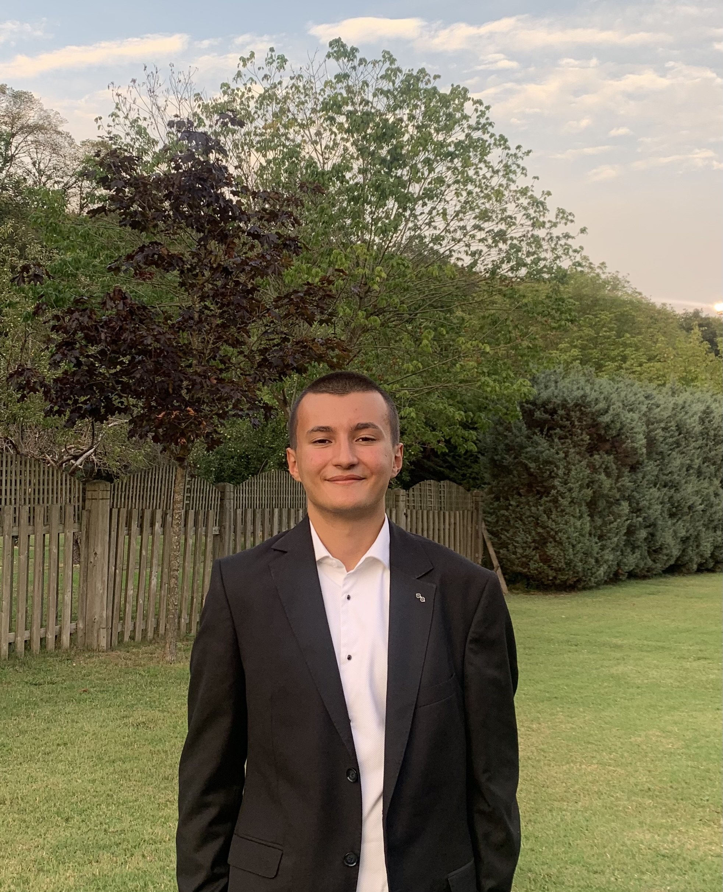
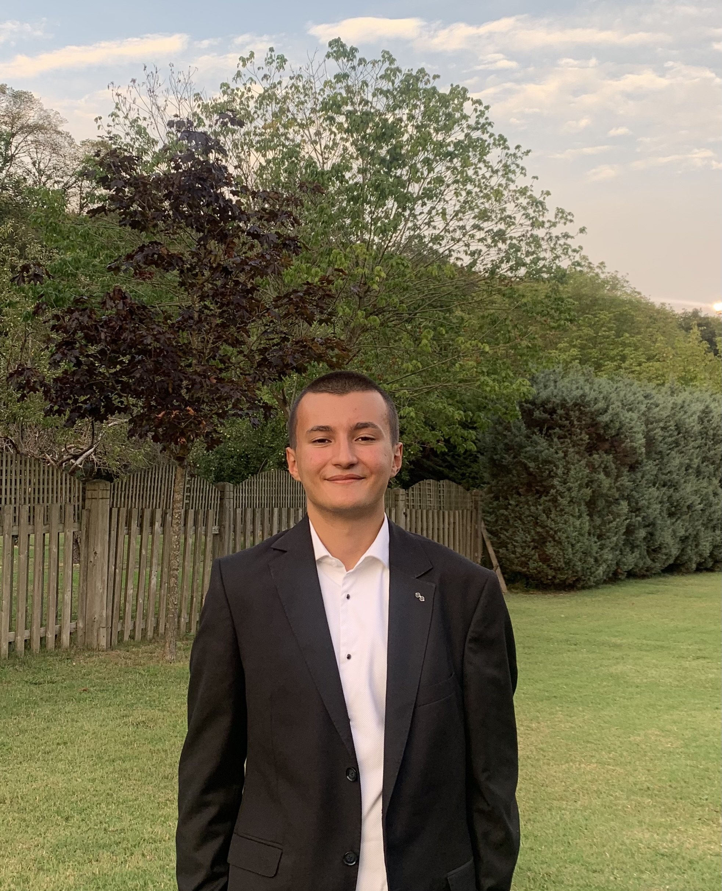

Nice to meet you
 

Hello, my name is Mateo Asin, I am an undergraduate mathematics student at the university of Warwick looking to enter the finance industry this summer
I am currently in the third year of a four year degree with my favourite modules being Financial Mathematics and Stochastic Processes. In general I prefer the Analytical branch over the Algebraic branch of mathematics and I am looking to do a masters in something to do with Analysis.
Please feel free to browse my website. You can find different ways to contact me on the contact section
Hobbies and interests
First and foremost, I have a deep love for mathematics. There's something incredibly satisfying about the logic and structure that math brings. Whether it’s solving a tricky equation, exploring new theories, or applying mathematical principles to solve real-world problems, math sharpens my mind and encourages critical thinking. The beauty of numbers and the satisfaction of finding the solution to a complex problem never gets old, and I always find new ways to challenge myself.
Another hobby that keeps me energized is traveling. The chance to explore new places, learn about different cultures, and immerse myself in fresh experiences is something I truly treasure. Traveling allows me to broaden my horizons, discover unique traditions, and meet people from all over the world. Whether it's a weekend getaway or an international adventure, I’m always looking for my next destination to satisfy my wanderlust.
And lastly, cars are a huge passion of mine. I’ve always been captivated by the design, technology, and performance behind cars. Ever since I was a little boy I have been fascinated by them. I remember being able to name every car brand at 2 years old! .